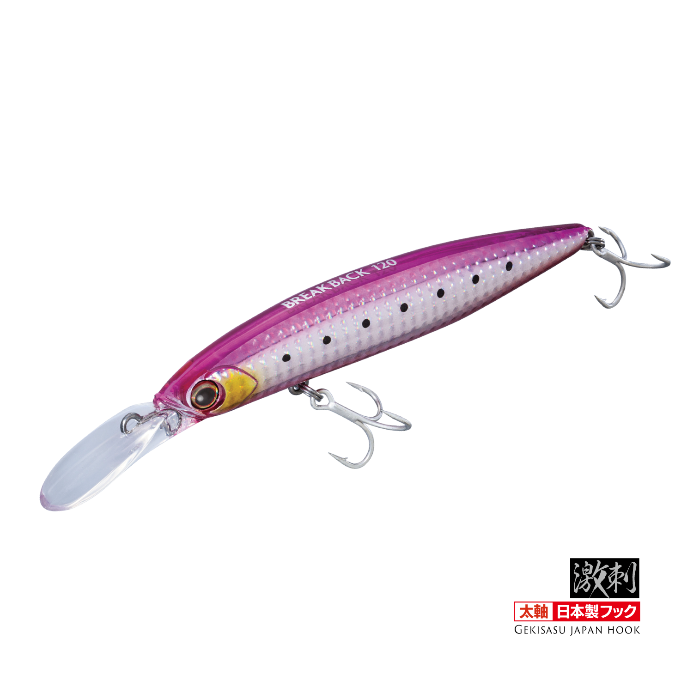
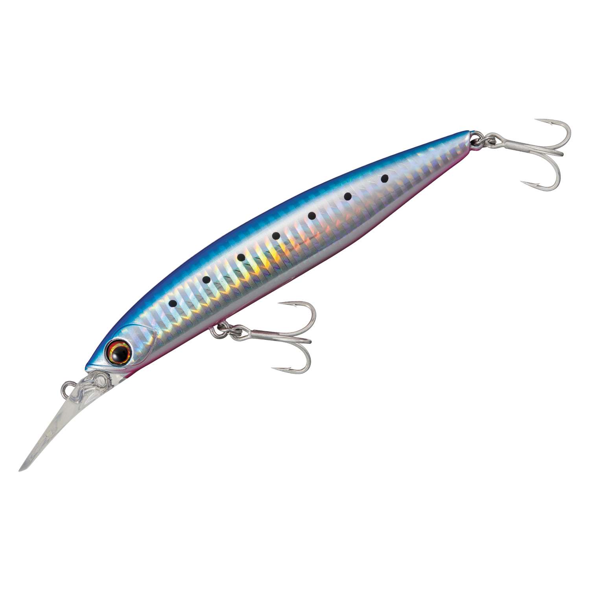
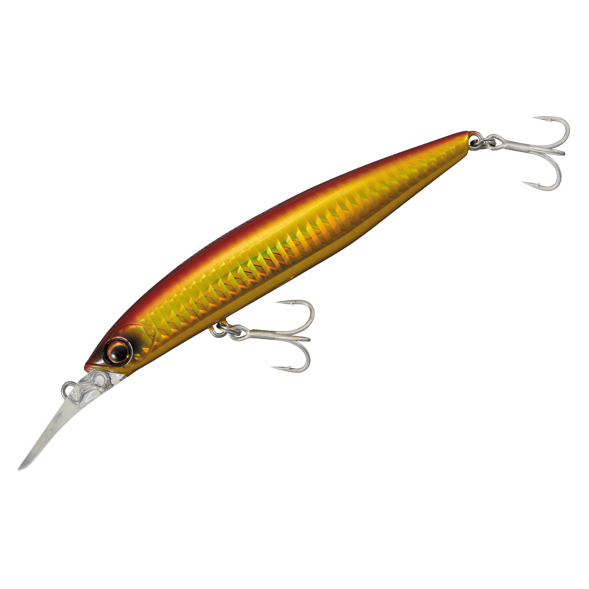
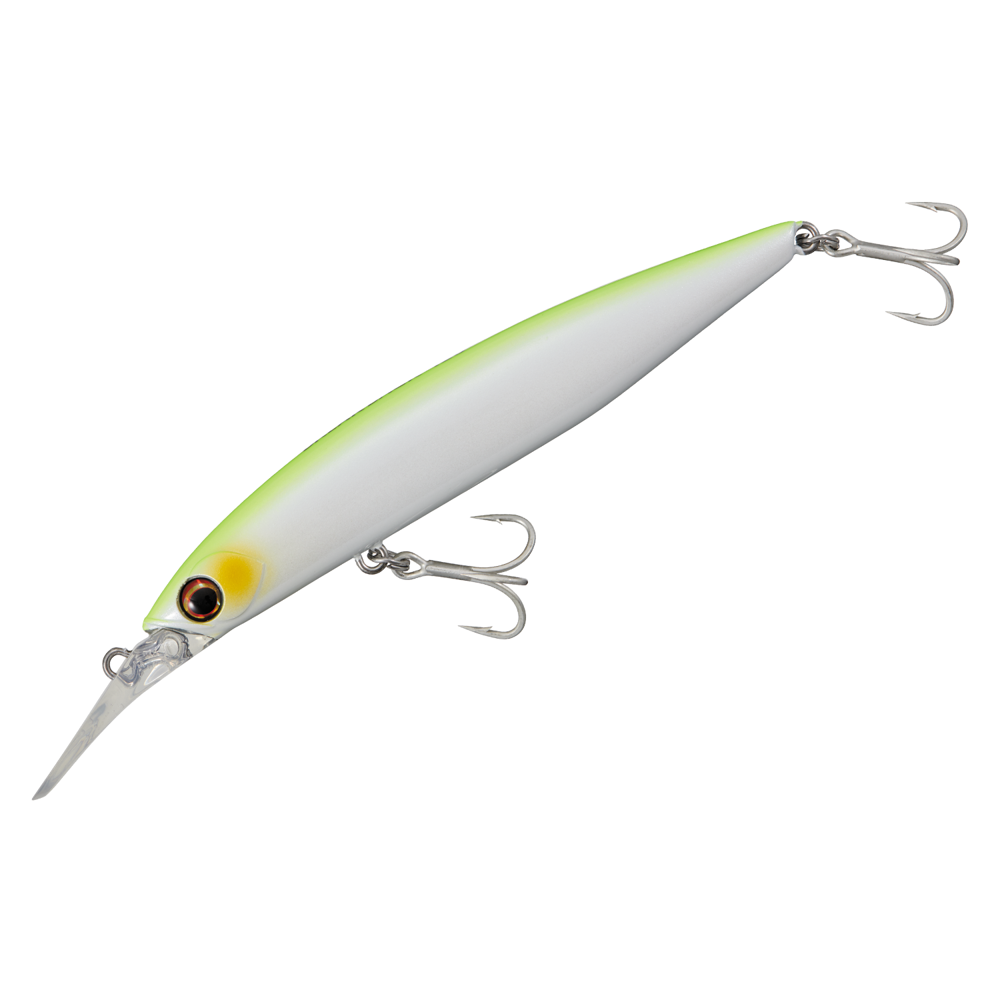
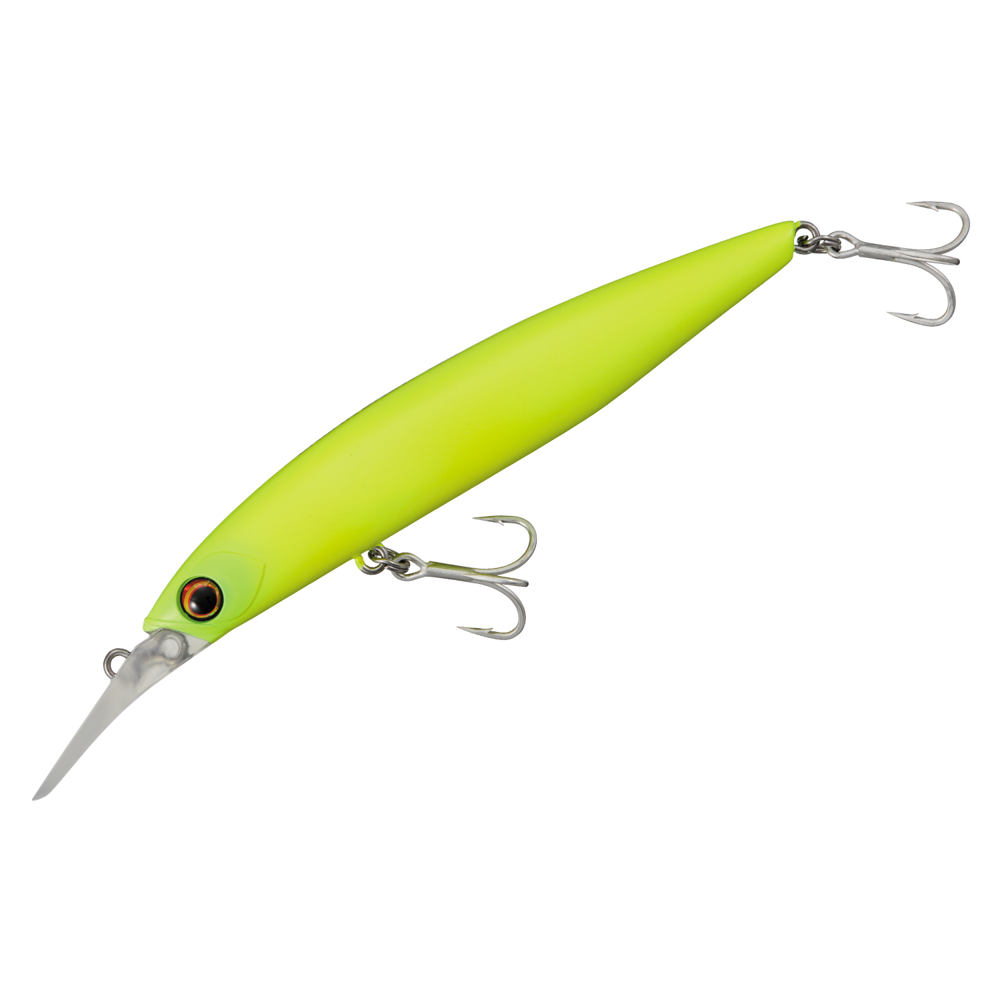
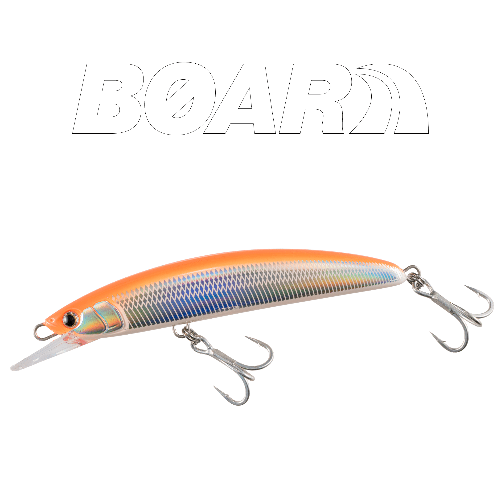
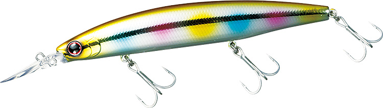

ブレイクバック120
（BREAK BACK 120）
ブレイクバック120（BREAK BACK 120）はMajor Craft（メジャークラフト）のシンキングミノーです。
ショアからボートまで対応する青物専用設計のミノーとして登場した、メジャークラフトのソルトミノー。早巻きでも崩れないスイム姿勢とレンジキープ力、タングステンボールによる圧倒的な飛距離で、青物を狙い撃てるのが最大の魅力です。

画像出典:メジャークラフト公式HP
スペック
- メーカー
- Major Craft（メジャークラフト）
- タイプ
- シンキングミノー
- 全長
- 120mm（ボディのみ）
- 自重
- 26g
- 潜行深度
- MAX2.5m
- フック
- 太軸の日本製フック「ゲキサス」
- ターゲット
- ブリ・サワラなど青物
- 価格
- 2,178円（税込）
▼今すぐチェック

ブレイクバック120の特徴
早巻きでも崩れないスイム姿勢と、タングステンボールの圧倒的飛距離を持つ青物専用ミノー
-
トータルバランス重視で早巻きでも安定
トータルバランスを重視した設計で、青物狙いに欠かせない早巻きでも安定したスイム姿勢とレンジキープ能力を維持する。
-
タングステンボールとエアロフォルムで圧倒的な飛距離
ムーブ仕様の高比重タングステンボールと、空気抵抗を極限まで抑えた流線型エアロフォルムで、圧倒的な飛距離を実現。沖のナブラや潮目まで届かせやすい。
-
太軸の日本製フック「ゲキサス」で青物仕様
太軸の日本製フック「ゲキサス」を標準装備した青物仕様。不意の大物がヒットしても、余裕を持ってファイトできる。
ブレイクバック120の使い方
基本は早巻き。着水後に狙いのレンジまで沈め、速いリトリーブで青物の追い食いを誘う。最大2.5mまで潜るので、表層で反応がない時は一段下のレンジを通せる。
ナブラが出たら、飛距離を活かして群れの先に投げ、早巻きで群れの中を通す。反応が渋い時はジャークを混ぜて、ダートで食わせの間を作るのも有効です。
ブレイクバック120の得意な状況
堤防やサーフ、磯からブリやサワラなどの青物を狙う状況が最大の出番。
ボートからのキャスティングにも対応するので、ショアでもオフショアでも、青物の回遊に合わせてミノーで狙いたい時に選びたい1本です。
ワンポイント
早巻きでもレンジをキープしやすいので、巻きスピードを一定に保ち、同じレンジを通し続けると反応が出やすくなります。
サワラやサゴシを狙う時は、歯でリーダーを切られないよう、リーダーを太めにするなどの対策をしておきましょう。
オススメカラー
ブレイクバック120は全10色展開。オススメのカラーを厳選して紹介します。

#2 ブルーピンク イワシ（ケイムラ）青物狙いの定番ブルピンにケイムラをプラス。迷ったらまず投げたい1色。

#4 レッドゴールド濁りやローライトに強いアカキン系。朝夕マズメや濁った日に。

#7 チャートバック パール視認性とシルエットのぼかしを両立。濁り潮やローライト時に。

#8 マット チャートシルエットがはっきり出るマットチャート。濁りが強い時に存在感を出せる。
画像出典:メジャークラフト公式HP
ブレイクバック120に似ているルアー
-
 レアリス ジャークベイトSWリミテッド160S
DUO
詳細はこちら＞
レアリス ジャークベイトSWリミテッド160S
DUO
詳細はこちら＞
大型サワラ狙いのシンキングジャークベイト。飛距離と潜行深度で青物を狙う考え方が、ブレイクバック120と共通する。
-

ボアーSS145 マリア 詳細はこちら＞ロックショア青物専用のジャーキングミノー。青物を狙うミノーとして、より強いタックルで磯から攻めたい時の選択肢になる。
-

セットアッパー125S-DR ダイワ 詳細はこちら＞中層を引けるシンキングダイバー。ただ巻きで一段下のレンジを通したい時に、ブレイクバック120と使い分けたい1本。